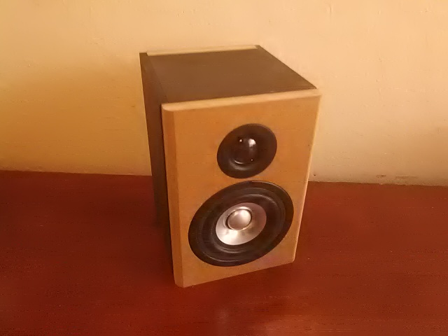

Purpose
When the hottest new artist comes out with a new album, everyone wants to be the first to listen to it. You just want to kick back and just listen especially with the bass turned all the way up. Bass is the most popular trait in music because we all love the deep booming sounds and the beat drops. Headphones get tangled and aren’t very durable. Small speakers are loud but have a hollow, echoey sound to them, while large speakers are deep sounding an expensive. My plan is to build a smaller size speaker but with the same booming sound of a large one.
